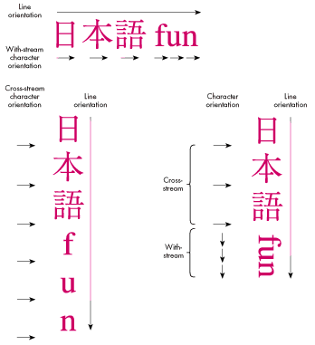
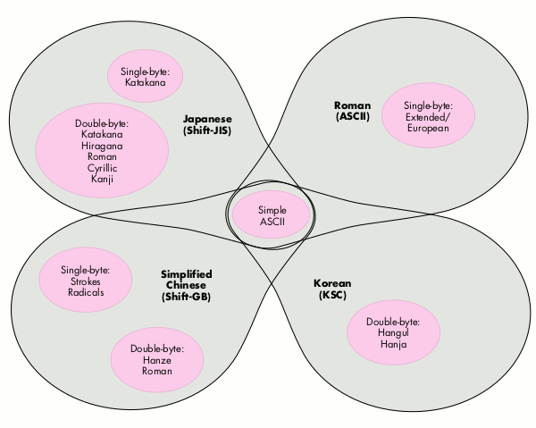

JOSEPH TERNASKY AND BRYAN K. ("BEAKER") RESSLERMore and more
software companies are finding rich new markets overseas. Unfortunately, many of
these developers have also discovered that localizing an application involves a lot more
than translating a bunch of STR# resources. In fact, localization often becomes an
unexpectedly long, complex, and expensive development cycle. This article describes
some common problems and gives proactive engineering advice you can use during
initial U.S. development to speed your localization efforts later on.
Most software localization headaches are associated with text drawing and character
handling, so that's what this article stresses. Four common areas of difficulty are:
We discuss each of these potential pitfalls in detail and provide data structures and
example code.
Throughout the discussion, we assume you're developing primarily for the U.S.
market, but you're planning to publish internationally eventually (or at least you're
trying to keep your options open). As you're developing your strategy, here are a few
points to keep in mind:
This article concentrates on features for western Europe and Japan because those are
the markets we're most familiar with. We encourage you to investigate other markets
on your own.
LINGO LESSON 101
This international software thing is rife with specialized lingo. For a complete
explanation of all the terms, see the hefty "Worldwide Software Overview," Chapter
14 ofInside MacintoshVolume VI. But we're not here to intimidate, so let's go over a
few basic terms.
Script. A writing system that can be used to represent one or more human languages.
For example, the Roman script is used to represent English, Spanish, Hungarian, and
so on. Scripts fall into several categories, as described in the next section, "Script
Categories."
Script code. An integer that identifies a script on the Macintosh.
Encoding. A mapping between characters and integers. Each character in the
character set is assigned a unique integer, called itscharacter code. If a character
appears in more than one character set it may have more than one encoding, a situation
discussed later in the section "Dealing With Character Encodings." Since each script
has a unique encoding, sometimes the termsscript and encodingare used
interchangeably.
Character code. An integer that's associated with a given character in a script.
Glyph. The displayed form of a character. The glyph for a given character code may
not always be the same -- in some scripts the codes of the surrounding characters
provide a context for choosing a particular glyph.
Line orientation. The overall direction of text flow within a line. For instance,
English has left-to-right line orientation, while Japanese can use either
top-to-bottom (vertical) or left-to-right (horizontal) line orientation.
Character orientation. The relationship between a character's baseline and the
line orientation. When the line orientation and the character baselines go in the same
direction, it's calledwith-streamcharacter orientation. When the line orientation
differs from the character baseline direction, it's called cross-stream character
orientation. For instance, in Japanese, when the line orientation is left- to-right,
characters are also oriented left-to-right (with-stream). Japanese can also be
formatted with a top-to-bottom (vertical) line orientation, in which case character
baselines can be left-to-right (cross-stream) or top-to-bottom (with-stream). See
Figure 1.

Figure 1 Line and Character Orientation in Mixed Japanese/English Text
SCRIPT CATEGORIES
Scripts fall into different categories that require different software solutions. Here
are the basic categories:
There are a few exceptional scripts that fall into more than one of these categories,
such as Arabic and Urdu. Arabic, for instance, is both context sensitive and
bidirectional.
Now with the preliminaries out of the way, we're ready to discuss some localization
pitfalls.
Sooner or later, your users are going to start typing. You can't stop them. So now what
do you do? One approach is to simply ignore keyboard input. While perfectly
acceptable to open-minded engineers like yourself, your Marketing colleagues may
find this approach unacceptable. So, let's examine what happens when two-byte script
users type on their keyboards.
Obviously, a Macintosh keyboard doesn't have enough keys to allow users of two-byte
script systems to simply press the key corresponding to the one character they want
out of 28,000. Instead, two- byte systems are equipped with a softwareinput method,
also called a front-end processoror FEP, which allows users to type phonetically on a
keyboard similar to the standard U.S. keyboard. (Some input methods use strokes or
codes instead of phonetics, but the mechanism is the same.)
As soon as the user begins typing, a smallinput windowappears at the bottom of the
screen. When the user signals the input method, it displays variousreadingsthat
correspond to the typed input. These readings may include one or more two-byte
characters. There may be more than one valid reading of a given "clause" of input, in
which case the user must choose the appropriate reading.
When satisfied, the user accepts the readings, which are then flushed from the input
window and sent to the application as key-down events. Since the Macintosh was never
really designed for two-byte characters, a two-byte character is sent to the
application as two separate one-byte key-down events. Interspersed in the stream of
key-down events there may also be one-byte characters, encoded as ASCII.
Before getting overwhelmed by all this, consider two important points. First,the input
method is taking the keystrokes for you. The keystrokes the user types are not being
sent directly into your application -- they're being processed first. Also, since the
user can type a lot into the input method before accepting the processed input, you can
get a big chunk of key-down events at once.
So let's see what your main event loop should look like in its simplest form if you want
to properly accept mixed one- and two-byte characters:
// Globals
unsigned short gCharBuf; // Buffer that holds our (possibly
// two-byte) character
Boolean gNeed2ndByte; // Flag that tells us we're waiting
// for the second byte of a two-byte
// character
void EventLoop(void)
{
EventRecord event; // The current event
short cbResult; // The result of our CharByte call
unsigned char oneByte; // Single byte extracted from event
Boolean processChar; // Whether we should send our
// application a key message
if (WaitNextEvent(everyEvent, &event, SleepTime(), nil)) {
switch (event.what) {
. . .
case keyDown:
case autoKey:
. . .
// Your code checks for Command-key equivalents here.
. . .
processChar = false;
oneByte = (event.message & charCodeMask);
if (gNeed2ndByte) {
// We're expecting the second byte of a two-byte
// character. So OR the byte into the low byte of
// our accumulated two-byte character.
gCharBuf = (gCharBuf << 8) | oneByte;
cbResult = CharByte((Ptr)&gCharBuf, 1);
if (cbResult == smLastByte)
processChar = true;
gNeed2ndByte = false;
} else {
// We're not expecting anything in particular. We
// might get a one-byte character, or we might
// get the first byte of a two-byte character.
gCharBuf = oneByte;
cbResult = CharByte((Ptr)&gCharBuf, 1);
if (cbResult == smFirstByte)
gNeed2ndByte = true;
else if (cbResult == smSingleByte)
processChar = true;
}
// Now possibly send the typed character to the rest
// of the application.
if (processChar)
AppKey(gCharBuf);
break;
case . . .
}
}
}
CharByte returns smSingleByte, smFirstByte, or smLastByte. You use this
information to determine what to do with a given key event. Notice that the AppKey
routine takes an unsigned short as a parameter. That's very important. For an
application to be two-byte script compatible, you need toalwayspass unsigned shorts
around for a single character. This example is also completelyone-bytecompatible --
if you put this event loop in your application, it works in the U.S.
The example assumes that the grafPort is set to the document window and the port's
font is set correctly, which is important because the Script Manager's behavior is
governed by the font of the current grafPort (see "Script Manager Caveats"). Although
this event loop works fine on both one- byte and two-byte systems, it could be made
more efficient. For example, since input methods sometimes send you a whole mess of
characters at a time, you could buffer up the characters into a string and send them
wholesale to AppKey, making it possible for your application to do less redrawing on
the screen.
Have you ever written the following lines of code?
void DrawMessage(short messageNum)
{
Str255theString;
GetIndString(theString, kMessageStrList, messageNum);
TextFont(geneva);
TextSize(9);
MoveTo(kMessageXPos, kMessageYPos);
DrawString(theString);
}
If so, you're overdue for a good spanking. While we're very proud of you for putting
that string into a resource like a good international programmer, the font, size, and
pen position are a little too, well, specific. Granted, it's hard to talk yourself out of
using all those nice constants defined in Fonts.h, but if you're trying to write a
localizable application, this is definitely thewrong approach.
A better approach is to do this:
TextFont(applFont);
TextSize(0);
GetFontInfo(&fontInfo);
MoveTo(kMessageXPos, kMessageYMargin + fontInfo.ascent +
fontInfo.leading);
Since applFont is always a font in the system script, and TextSize(0) gives a size
appropriate to the system script, you get the right output. Plus, you're now
positioning the pen based on the font, instead of using absolute coordinates. This is
important. For instance, on a Japanese systemTextSize(0) results in a point size of
12, so the code in the preceding example might not work if the pen-positioning
constants were set up to assume a 9-point font height.
If you want to make life even easier for your localizers, you could eliminate the
pen-positioning constants altogether. Instead, use an existing resource type (the
'DITL' type is appropriate for this example) to store the layout of the text items in the
window. Even though you're drawing the items yourself, you can still use the
information in the resource to determine the layout, and the localizers can then change
the layout using a resource editor -- which is a lot better than hacking your code.
There are some other interesting ways to approach this problem. Depending on what
you're drawing, the Script Manager may be able to tell you both which font and which
size to use. Suppose you need to draw some help text. You can use the following code:
void DrawHelpText(Str255 helpText, Rect *helpZone)
{
long fondSize;
fondSize = GetScript(smSystemScript, smScriptHelpFondSize);
TextFont(HiWord(fondSize));
TextSize(LoWord(fondSize));
NeoTextBox(&helpText[1], helpText[0], helpZone, GetSysJust(),
0, nil, nil);
}
Here the Script Manager tells you the appropriate font and size for help text. On a U.S.
system, that would be Geneva 9; on a Japanese system, it's Osaka 9. NeoTextBox is a
fast, flexible replacement for the Toolbox routine TextBox and is Script Manager
compatible. You can learn more about NeoTextBox by reading "The TextBox You've
Always Wanted" indevelopIssue 9.
The Script Manager has some other nice combinations:
smScriptMonoFondSize // Default monospace font and size (use when
// you feel the urge to use Courier 12)
smScriptSmallFondSize // Default small font and size (use when you
// feel the urge to use Geneva 9)
smScriptSysFondSize // Default system font and size (use when you
// feel the urge to use Chicago 12)
smScriptAppFondSize // Default application font and size (use as
// default document font)
The various FondSize constants are available only in System 7. If you're writing for
earlier systems, you shouldat leastuse GetSysFont, GetAppFont, and GetDefFontSize, as
described in Chapter 17 ofInside MacintoshVolume V. And if you're too lazy to do even
that,pleaseuse TextFont(0) and TextSize(0) to get the system font, which will be
appropriate for the system script. This is, by the way, how grafPorts are initialized
by QuickDraw. In other words, if you don't touch the port, it will already be set up
correctly for drawing text in the system script.
Before you get too excited, you should know that we're not talking about the true-love
variety of date here. No, we're talking about something much more tedious -- input
and output of international dates, times, numbers, and currency values. First we'll
look at output formatting, and then input parsing.
OUTPUT OF DATES, TIMES, NUMBERS, AND CURRENCY VALUES
To output dates, times, numbers, and currency values (which we'll callformatted
values), you need to know the script you're formatting for. This can be a user
preference, or you can determine the script from the current font of the field
associated with the value you're formatting (use Font2Script). You can use these
International Utilities routines to format dates, times, and numbers:
Formatting a currency value is a bit trickier. You have to format the number and then
add the currency symbol in the right place. We'll show you how to get the currency
symbol and the positioning information from the 'itl0' resource.
First, let's look at an example of date and time formatting:
#define kWantSeconds true // For IUTimeString
#define kNoSeconds false
unsigned long secs;
Str255 theDate, theTime;
// Get the current date and time into Pascal strings.
GetDateTime(&secs);
IUDateString(secs, shortDate, theDate);
IUTimeString(secs, kNoSeconds, theTime);
Formatting a number with FormatX2Str is a little more complicated, because
FormatX2Str requires a canonical number format string (type NumFormatString)
that describes the output format. You make a NumFormatString by converting a literal
string, like
##,###.00;-##,###.00;0.00
The strings are in the format
positiveFormat;negativeFormat;zeroFormat
where the last two parts are optional. The example string would format the number
32767 as 32,767.00, -32767 as -32,767.00, and zero as 0.00. The exact format of
these strings can be quite complicated and is described inMacintosh Worldwide
Development: Guide to System Software.
The following handy routine formats a number using a format read from a string list.
You provide the string list resource and specify which item in the list to use when
formatting a given number.
OSErr FormatANum(short theFormat, extended theNum, Str255 theString)
{
NItl4Handle itl4;
OSErr err;
NumberParts numberParts;
Str255 textFormatStr; // "Textual" number format spec
NumFormatString formatStr; // Opaque number format
// Load the 'itl4' and copy the NumberParts record out of it.
itl4 = (NItl4Handle)IUGetIntl(4);
if (itl4 == nil)
return resNotFound;
numberParts = *(NumberParts *)((char *)*itl4 +
(*itl4)->defPartsOffset);
// Get the format string, convert it to a NumFormatString, and
// then use it to format the input number.
GetIndString(textFormatStr, kFormatStrs, theFormat);
err = Str2Format(textFormatStr, &numberParts, &formatStr);
if (err != noErr)
return err;
err = FormatX2Str(theNum, &formatStr, &numberParts, theString);
return err;
}
Given a currency value, the following routine formats the number and then adds the
currency symbol in the appropriate place. This routine assumes that you use a
particular number format for currency values, but you can easily modify it to include
an argument that specifies the format item in the string list.
OSErr FormatCurrency(extended theNum, Str255 theString)
{
Intl0Hndl itl0;
OSErr err;
Str255 currencySymbol, formattedValue;
// First, format the number like this: ##,###.00. FormatX2Str
// will replace the "," and "." separators
// appropriately for the font script.
err = FormatANum(kCurrencyFormat, theNum, formattedValue);
if (err != noErr)
return err;
// Get the currency symbol from the 'itl0' resource. The currency
// symbol is stored as up to three bytes. If any of the bytes
// aren't used they're set to zero. So, we use strncpy to copy
// out the currency symbol as a C string and forcibly terminate
// it in case it's three bytes long.
itl0 = (Intl0Hndl)IUGetIntl(0);
if (itl0 == nil)
return resNotFound;
strncpy(currencySymbol, &(*itl0)->currSym1, 3);
currencySymbol[3] = 0x00;
c2pstr(currencySymbol);
// Now put the currency symbol and the formatted value together
// according to the currency symbol position.
if ((*itl0)->currFmt & currSymLead) {
StringCopy(theString, currencySymbol);
StringAppend(theString, formattedValue);
} else {
StringCopy(theString, formattedValue);
StringAppend(theString, currencySymbol);
}
return noErr;
}
The 'itl0' resource also includes the decimal and thousands separators. These should be
the same values used by FormatX2Str, which gets these symbols from the
NumberParts structure in the 'itl4' resource.
If using the extended type in your application makes you queasy, you can easily modify
these routines to work with the Fixed type. Just use Fix2X in the FormatX2Str call to
convert the Fixed type to extended.
INPUT OF DATES, TIMES, AND NUMBERS
The Script Manager includes routines for parsing formatted values to retrieve a date,
time, or number. The process is logically the reverse of formatting a value for output.
Most applications don't even deal with formatted numbers. They just read raw
numbers (no thousands separators or currency symbols), locate the decimal
separator, convert the integer and fraction parts using NumToString, and then put the
integer and fraction parts back together.
When writing Macintosh applications, most developers make certain assumptions that
cause problems when the application is used in other countries. One of these
assumptions is that all characters are represented by a single byte; another is that a
given character code always represents the same character. The first assumption
causes immediate problems because the two-byte script systems use both one-byte
and two-byte character codes. An application that relies on one-byte character codes
often breaks up a two-byte character into two one-byte characters, rendering the
application useless for two-byte text. The second assumption causes more subtle
problems, which prevent the user from mixing text in several different scripts
together in one document.
Different versions of the Macintosh system software use a different script by default.
Systems sold in the U.S. and Europe use the Roman script. Those sold in Japan, Hong
Kong, or Korea use the Japanese, traditional Chinese, or Korean script, respectively.
In addition, some sophisticated users have several script systems installed at one time,
and System 7.1 makes this even easier. Actually, even unsophisticated users can have
two script systems installed at one time. All systems have the Roman script installed,
so Japanese users, for example, have both the Japanese and the Roman script
available.
For an application to work correctly with any international system software, it must
be able to handle different character encodings simultaneously. That is, the user should
be able to enter characters in different scripts and edit the text without damaging the
associated script information. This section discusses three ways to handle character
encodings. These methods require different amounts of effort to implement and provide
different capabilities. Of course, those that require the most effort also provide the
most flexibility and power for your users. Before we discuss these methods, let's
define some more terms.
Language. A human language that's written using a particular script. Several
languages can share the same script. For example, the Roman script is used by
English, French, German, and so on. It's also possible for the same language to be
written in more than one script, although that's a rare exception.
Alphabet, syllabary, ideograph set. A collection of characters used by a
language. Some scripts include more than one of these collections. As a simple example,
the Roman script includes both an uppercase and a lowercase alphabet. As a more
complicated example, the Japanese script includes the Roman alphabet, the Hiragana
and Katakana syllabaries, and the Kanji ideograph set. An alphabet, syllabary, or
ideograph set isn't necessarily encoded in the same way in two different scripts. For
example, the Roman alphabet in the Roman script uses one-byte codes, but the Roman
alphabet in the Japanese script uses either one-byte or two-byte codes.
Segment. A subset of an encoding that may be shared by one or more scripts. For
example, the simple (7-bit) ASCII characters make up a segment that's shared by all
the scripts on the Macintosh. Characters in this segment have the same code in any
Macintosh encoding.
Unicode. An international character encoding that encompasses all the written
languages of the world. Each character is assigned a unique 16-bit integer. Unicode is
aunifiedencoding -- all characters that have the same abstract shape share a common
character code, even if they're used in more than one language.
METHOD 1: NATIVE ENCODING
The easiest method is to simply pick one character encoding for your localization and
stick with it throughout the application. This is usually the native character encoding
for the country (and language) that you're targeting with the localized application. For
example, if you're localizing anapplication for the Japanese market, you choose the
shift-JIS (Shifted Japanese Industrial Standard) character encoding and modify all
your text-handling routines to use this encoding.
The shift-JIS encoding uses both one-byte and two-byte character codes, so you need
to use the Script Manager's CharByte routine whenever you're stepping through a
string. For a random byte in a shift-JIS encoded string, CharByte tells you if the byte
represents a one-byte character, the low byte of a two-byte character, or the high
byte of a two-byte character. You also have to handle two-byte characters on input (as
described earlier in the section "Keyboard Input") and use the native system and
application fonts for text (as described in the section "Avoiding Font Tyranny").
To summarize, the native encoding method has a few advantages:
Unfortunately, this method has many disadvantages:
METHOD 2: MULTIPLE ENCODINGS
The most complete method for handling character encodings is to keep track of the
encoding for every bit of text that your application stores. In this method the encoding
(or the script code) is stored with a run of text just like a font family, style, or point
size. The first step is to determine which languages you may want to support. Once this
is determined, you can decide which encodings are necessary to implement support for
those languages. For example, suppose your Marketing department wants to do
localized versions for French, German, Italian, Russian, Japanese, and Korean.
French, German, and Italian all use the Roman script. Russian uses the Cyrillic script;
Japanese uses the Japanese script; and Korean uses the Korean script. To support these
languages, you have to handle the Roman, Cyrillic, Japanese, and Korean encodings.
In general, each script that you include requires support for its encoding and,
possibly, additional features that are specific to that script. For example, Japanese
script can be drawn left-to-right or top- to-bottom, so a complete implementation
would handle vertical text. There are other features specific to the Japanese script
(amikake, furigana, and so on) that you may also want to implement.
If any of the encodings include two-byte characters, the data structures that you use to
represent text runs must be able to handle two-byte codes. When you're processing a
text run, the encoding of that run determines how you can treat the characters in the
run. For example, you can munge a Roman text run in the usual way, safe and secure in
the familiar world of one-byte character codes. In contrast, your dealings with
Japanese text runs may be wrought with angst since these runs can include both
one-byte and two-byte characters in any combination. The Script Manager is designed
to support applications that tag text runs with a script code. As long as the font of the
current grafPort is set correctly, all the Script Manager routines work with the
correct encoding for that script. For example, if you specify a Japanese font in the
current grafPort, the Script Manager routines assume that any text passed to them is
stored in the shift-JIS encoding.
Keyboard script. During this discussion of the multiple encodings method, we've
been assuming that you already know the script (and therefore the encoding) of text
that the user has entered. How exactly do you know this? The Script Manager keeps
track of the script of the text being entered from the keyboard in a global variable.
Your application should read this variable programmatically after receiving a
keyboard event, as follows:
short keyboardScript;
keyboardScript = GetEnvirons(smKeyScript);
Once you know the keyboard script, make sure that this information stays with the
character as it becomes part of a text run. If the keyboard script is the same as the
script of the text run, you can just add this character to the text run. Otherwise, you
must create a new text run, tag it with the keyboard script, and place the character in
it.
You can also set the keyboard script directly when the user selects text with the mouse
or changes the current font. The question is, which script do you set the keyboard to
use? That depends on the font of the selected text or the new font the user has chosen.
The first step is to convert the font into a script and then use the resulting script code
to set the keyboard script. This process is known askeyboard forcing.
short fontScript;
fontScript = Font2Script(myFontID);
KeyScript(fontScript);
The user can always change the keyboard script by clicking the keyboard icon (in
System 6) or by choosing a keyboard layout from the Keyboard menu (in System 7).
As a result, you're no longer sure that the keyboard script and the font script agree
when the user actually types something. You should always check the keyboard script
against the font script before entering a typed character into a text run. If the
keyboard script and the font script don't agree, a new current font is derived from the
keyboard script. This process is known asfont forcing.
short fontScript, keyboardScript;
fontScript = Font2Script(myFontID);
keyboardScript = GetEnvirons(smKeyScript);
if (fontScript != keyboardScript)
myFontID = GetScript(keyboardScript, smScriptAppFond);
The combination of keyboard forcing and font forcing is calledfont/keyboard
synchronization. Both keyboard and font forcing should be optional; the user should be
able to turn these features off with a preferences setting.
Changing fonts. An application that works with multiple encodings must pay special
attention to font changes. For each text run in the selection, the application should
check the script of the text run against the script of the new font. If the scripts agree,
the text run can use the new font. If the scripts don't agree, the application can either
ignore the new font for that text run or apply some special processing.
short fontScript;
short textRunIndex, textRunCount;
fontScript = Font2Script(myNewFontID);
for (textRunIndex = 0;
textRunIndex < textRunCount;
textRunIndex++) {
if (textRunStore[textRunIndex].script == fontScript)
textRunStore[textRunIndex].fontID = myNewFontID;
else
SpecialProcessing(&textRunIndex, &textRunCount, myNewFontID);
}
All the encodings used by the Macintosh script systems include the simple (7-bit)
ASCII characters, so it's often possible to convert these characters from one script to
another. The special processing consists of these two steps: 1. Breaking a text run into
pieces, some of which contain only simple ASCII characters and others that contain all
the characters not included in simple ASCII 2. Applying the new font to the runs that
contain only simple ASCII characters and leaving the other runs with the old font
Boolean FindASCIIRun(unsigned char *textPtr, long textLength,
long *runLength)
{
*runLength = 0;
if (*textPtr < 0x80) {
// We know that this character is simple ASCII, since values
// less than 128 can't be the first byte of a two-byte
// character, and they're shared among all scripts. So, let's
// block up a run of simple ASCII.
while (*textPtr++ < 0x80 && textLength-- > 0)
*runLength++;
return true; // Run is simple ASCII.
} else {
// We know this character is not simple ASCII. It may be
// two-byte or it may be some character in a non-Roman
// script. So, let's block up a run of non-simple-ASCII
// characters.
while (textLength > 0) {
if (CharByte(textPtr, 0) == smFirstByte) {
// Skip over two-byte character.
textPtr += 2;
textLength -= 2;
*runLength += 2;
} else if (*textPtr >= 0x80) {
// Skip over one-byte character.
textPtr++;
textLength--;
*runLength++;
} else
break;
}
return false; // Run is NOT simple ASCII.
}
}
void SpecialProcessing(short *runIndex, short *runCount,
short myNewFontID)
{
TextRunRecord originalRun, createdRun;
unsigned char *textPtr;
long textLength, runLength, runFollow;
Boolean simpleASCII;
// Retrieve this run and remove it from the run list.
GetTextRun(*runIndex, &originalRun);
RemoveTextRun(*runIndex);
// Get the pointer and length of the original text.
textPtr = originalRun.text;
textLength = originalRun.count;
// Loop through all of the sub-runs in this run.
runFollow = *runIndex;
while (textLength > 0) {
// Find the length of the sub-run and its type.
TextFont(originalRun.fontID);
simpleASCII= FindASCIIRun(textPtr, textLength, &runLength);
// Create the sub-run and duplicate the characters.
createdRun = originalRun; // Same formats.
createdRun.text = NewPtr(runLength);
// Real programs check for nil pointer here.
createdRun.length = runLength;
BlockMove(textPtr, createdRun.text, runLength);
// Roman runs can use the new font.
if (simpleASCII)
createdRun.fontID = myNewFontID;
// Add the new sub-run and advance the run index.
AddTextRun(runFollow++, createdRun);
// Advance over this sub-run and continue looping.
textPtr += runLength;
textLength -= runLength;
}
// Dispose of the original run information.
DisposeTextRun(originalRun);
}
Searching and sorting. Applications that work with multiple encodings must also
take care during searching or sorting operations. An application that uses only the
native encoding can assume that character codes are unique and that any two text runs
can be compared directly using the sorting routines in the International Utilities
Package. On the other hand, an application that uses multiple encodings must always
consider a character code within the context of a text run and its associated script. In
this case, character codes are unique only within a script, not across script
boundaries, so text runs can't be compared directly using International Utilities
routines unless they have the same script. If the script codes are different, the
International Utilities routines provide a mechanism for first ordering the scripts
themselves (IUScriptOrder).
You have the same problems with searching as with sorting. In addition, search
commands usually include options for case sensitivity that could be extended in a
multiple encodings application. For example, the Japanese script includes both
one-byte and two-byte versions of the Roman characters. For purposes of searching,
the user might want to consider these equivalent. The simplified Chinese script also
includes both one-byte and two-byte versions of the Roman characters, and these
should also be equivalent to Roman characters in the Roman script and in the Japanese
script. Just like case sensitivity, considering one- and two-byte versions of a
character as equivalent should be an option in your search dialog box. You can use the
Script Manager's Transliterate routine to implement a byte-size insensitive
comparison. Use Transliterate to convert both the source and the target text into
one-byte characters, then compare the resulting strings. Because all the scripts share
the same simple (7-bit) ASCII character codes, this mechanism treats all the Roman
characters, both one-byte and two-byte, in every script as equivalent.
Summary. The multiple encodings method has several advantages:
The disadvantages of this method are apparent from the examples:
METHOD 3: POOR MAN'S UNIFICATION
Our favorite method combines the power of the multiple encodings method with the
simplicity of the native encoding method. The idea is to create a single "native"
encoding that encompasses all the scripts included in the multiple encodings method. In
the multiple encodings method, some characters are encoded several times: a character
can have the same code value in different scripts, or it can have different code values
in the same script. For example, the letterA has the code value 0x41 in the Roman
script and the same one-byte code value in Japanese and traditional Chinese. However,
Japanese also encodes the letterA as the two-byte value 0x8260, and traditional
Chinese also encodes it as the two-byte value 0xA2CF. A unified encoding would map all
of the identical characters in the multiple encodings to one unique code value.
You might have noticed that this method has some of the same goals as the Unicode
scheme -- a single character encoding for all languages with one unique code for every
character. Unicode extends this goal to the unification of the two-byte scripts.
Characters that have the same abstract shape in the simplified Chinese, traditional
Chinese, Japanese, and Korean scripts have been grouped together as a single character
under Unicode. Our method doesn't go that far. We unify the simple ASCII characters
from all scripts but leave the various two-byte scripts to their unique encodings.
Thus the name for this method -- poor man's unification.
Segments. The poor man's unification method relies on the concept of a segment. A
segment is a subset of an encoding with characters that are all the same byte size. For
example, the Roman script is divided into two segments -- the simple ASCII segment
and the extended ASCII/European segment. The Japanese script has three segments --
the simple ASCII segment, the one-byte Katakana segment, and the two-byte segment
(including symbols, Hiragana, Katakana, Roman, Cyrillic, and Kanji).
The key to poor man's unification is the simple ASCII segment. This segment is shared
among all the scripts on the Macintosh (see Figure 2). Furthermore, poor man's
unification treats the various encodings as collections of segments that can be shared
among encodings. There's logically only one simple ASCII segment, and all the scripts
share it. In the multiple encodings method, characters in this range could be found in
each script. That is, the word "Beaker" could be stored in both a Roman text run and in
a Japanese text run (as one-byte ASCII). In contrast, an application that uses poor
man's unification would tag text runs with the segment, not the script, so these two
occurrences of "Beaker" would be indistinguishable.

Figure 2 Scripts Sharing the ASCII Segment
The best way to see the advantages of this method is to solve a problem we already
considered -- changing the font of the selection. With the multiple encodings method,
this entailed breaking text runs into smaller runs using our FindASCIIRun routine.
With poor man's unification, the same problem is much easier to solve because the
runs are already divided into segments and the simple ASCII segment is allowed to take
on any font. Other segments are only allowed to use fonts that belong to the same script
they do.
#define asciiSegment 0
#define europeanSegment 1
#define katakanaSegment 2
#define japaneseSegment 3
short fontScript, runSegment;
short textRunIndex, textRunCount;
fontScript = Font2Script(myNewFontID);
for (textRunIndex = 0;
textRunIndex < textRunCount;
textRunIndex++) {
runSegment = textRunStore[textRunIndex].segment;
if (SegmentAllowedInScript(runSegment, fontScript))
textRunStore[textRunIndex].fontID = myNewFontID;
}
The special processing is gone (surprise). Once you know that a segment isn't included
in the script of the font, you can't go any further. Such a segment consists entirely of
characters that aren't in the script of the font.
Boolean SegmentAllowedInScript(short segment, short script)
{
switch (script) {
case smRoman:
switch (segment) {
case asciiSegment:
case europeanSegment:
return true;
default:
return false;
}
case smJapanese:
switch (segment) {
case asciiSegment:
case katakanaSegment:
case japaneseSegment:
return true;
default:
return false;
}
default:
switch (segment) {
case asciiSegment:
return true;
default:
return false;
}
}
}
Determining a segment from keyboard input. How do you determine the
segment of a character when it's entered from the keyboard? 1. First determine
which script the character belongs to by checking the keyboard script. 2. Then use
the character-code value and the encoding definitions to assign the character a
particular segment.
#define ksJISSpace 0x8140
unsigned short keyboardScript;
unsigned short charSegment;
EventRecord lowByteEvent;
keyboardScript = GetEnvirons(smKeyScript);
charSegment = ScriptAndByteToSegment(keyboardScript, charCode);
if (charSegment == japaneseSegment) {
// Get low byte of two-byte character from keyboard.
do {
// You can get null events between two bytes of a two-byte
// character.
GetNextEvent(keyDownMask | keyUpMask | autoKeyMask,
&lowByteEvent);
if (lowByteEvent.what == nullEvent)
GetNextEvent(keyDownMask | keyUpMask | autoKeyMask,
&lowByteEvent);
} while (lowByteEvent.what == keyUp);
if ((lowByteEvent.what == keyDown) ||
(lowByteEvent.what == autoKey))
charCode = (charCode << 8) |
(lowByteEvent.message & charCodeMask);
else
// We've gotten a valid high byte under the Japanese keyboard
// with no subsequent low byte forthcoming. Something serious
// is wrong with the current input method. Return a Japanese
// space for now. Hmmmm.
charCode = ksJISSpace;
}
#define kASCIILow 0x00
#define kASCIIHigh 0x7f
#define kRange1Low 0x81
#define kRange1High 0x9f
#define kRange2Low 0xe0
#define kRange2High 0xfc
short ScriptAndByteToSegment(unsigned short script,
unsigned char byte)
{
switch (script) {
case smRoman:
if ((byte >= kASCIILow) && (byte <= kASCIIHigh))
return asciiSegment;
else
return europeanSegment;
case smJapanese:
if ((byte >= kASCIILow) && (byte <= kASCIIHigh))
return asciiSegment;
else if ((byte >= kRange1Low) && (byte <= kRange1High))
return japaneseSegment;
else if ((byte >= kRange2Low) && (byte <= kRange2High))
return japaneseSegment;
else
return katakanaSegment;
default:
// New scripts and segments added before this.
return asciiSegment;
}
}
You might think this is quite a bit of effort just to get the low byte of a two-byte
character. You're right. And as for Joe's use of the antiquated GetNextEvent instead of
the more modern WaitNextEvent, Beaker notes that "It's a cooperative multitasking
world and Joe's not cooperating." Joe replies, "Yeah, but I don't want a context switch
while I'm trying to get the low byte of a two- byte character."
Changing fonts. Applications that employ poor man's unification still have to worry
about font forcing. Here's an algorithm for "smart" font forcing that tries to
anticipate which fonts the user will select for text in each segment. When you find a
case where the current keyboard script and font script don't agree, instead of using the
application font for the keyboard script, search the surrounding text runs for a font
that does agree with the keyboard script. Only if you can't find a font that agrees do you
default to the application font of the keyboard script. From the user's perspective, this
is much nicer. Once the user has selected a font for each script, the application goes
back and forth between the fonts automatically as the keyboard script is changed.
short fontScript, keyboardScript;
fontScript = Font2Script(myFontID);
keyboardScript = GetEnvirons(smKeyScript);
// Search backward.
if (fontScript != keyboardScript) {
for (textRunIndex = currentRunIndex - 1;
textRunIndex >= 0;
textRunIndex--) {
myFontID = textRunStore[textRunIndex].fontID;
fontScript = Font2Script(myFontID);
if (fontScript == keyboardScript)
break;
}
}
// Search forward.
if (fontScript != keyboardScript) {
for (textRunIndex = currentRunIndex + 1;
textRunIndex < textRunCount;
textRunIndex++) {
myFontID = textRunStore[textRunIndex].fontID;
fontScript = Font2Script(myFontID);
if (fontScript == keyboardScript)
break;
}
}
// Punt if we couldn't find an appropriate run.
if (fontScript != keyboardScript)
myFontID = GetScript(keyboardScript, smScriptAppFond);
Applications that use font forcing also have to worry about keyboard forcing. However,
if the application includes the feature just described, keyboard forcing is not as
important. Many users will prefer to leave the keyboard completely under manual
control and allow the "smart" font forcing to choose the correct font when they start
typing. The keyboard script is always visible in the menu bar, but the current font is
not.
Summary. The poor man's unification method has more advantages than the other
two:
Unfortunately, this method has two disadvantages when compared to pure Unicode:
Unicode does away with both of these disadvantages by making all characters two bytes
wide and insisting on one huge set of unique character codes.
Perhaps the moral of the story is "globalization, not localization," as Joe says. The
more generalizations you can build into your application during initial development,
the more straightforward your localization process is destined to be, and the less your
localized code base will diverge from your original product.
Weigh the size and growth potential of a given language market against the amount of
effort required to implement that language. Stick to the markets where your product is
most likely to flourish. This article has shown that in some cases you can dramatically
reduce code complexity by taking shortcuts -- the poor man's unification scheme in
this article is a good example. A healthy balance between Script Manager techniques
and custom code will help you bring your localized product to market fast and make it a
winner.
SCRIPT MANAGER CAVEATS
When you use a char to store a character or part of a character, use an unsigned char.
In two-byte scripts, the high byte of a two-byte character often has the high bit set,
which would make a signed char negative, possibly ruining your day. The same goes for
the use of a short to store a full one- or two-byte character -- use an unsigned short.
Another important point is that most Script Manager routines rely on the font of the
current grafPort for their operation. That means you should always be sure that the
port is set appropriately and that the font of the current port is correct before making
any Script Manager calls.
A new set of interfaces has been provided for System 7.1. While the old Script
Manager's text routines still work, the new routines add flexibility. For example, you
can use CharacterByteType instead of CharByte.
THE DEMISE OF ONE-BYTE CHARACTERS
The point of poor man's unification is to simplify your life. On that theme, there's
another technique that will help. You can simply decide that characters are two bytes.
Period. Expand one-byte characters into an unsigned short, with the character code in
the low byte and the segment code in the high byte. Then just use unsigned shorts
everywhere instead of unsigned chars. You'll find that your code gets easier to write
and easier to understand, and that lots of special cases where you would have broken
everything out into one- and two-byte cases collapse into one case.
Putting the segment code into the high byte of one-byte characters ensures that the
one-byte character codes are unique. If your program handles only one two-byte
script, the two-byte codes are also unique. When both these conditions are true,
there's no need to store the segment codes in runs, since they're implied by the high
byte of each character code.
Here are a few examples using the codes from the sample segments in the section on
poor man's unification:
In other words, one-byte characters carry their segment code in their high byte, and
the two-byte characters all belong to the same segment. You can imagine how much
easier searching and sorting algorithms are if you know you can always advance your
pointers by two bytes instead of constantly calling CharByte to find out how big each
character is. Plus, you might as well get used to storing 16 bits per character, since
that's how Unicode works. Yes, it's an extra byte per character -- deal with it.
JOSEPH TERNASKY wrote accounting software for a "Big Eight" firm until a senior
partner recruited him into the Order of the Free Masons. He showed great promise as
an Adept, and the Order sent him to the Continent to continue his studies under the
notorious Aleister Crowley, founder of the Temple of the Golden Dawn. After years of
study in the Great Art, Joseph was sent back to America to accelerate the breakdown of
civil order and the Immanentizing of the Eschaton. He resumed his former identity and
now spends his remaining years adding hopelessly complicated international features
to the Macintosh system software and various third-party applications.*
BRYAN K. ("BEAKER") RESSLER (AppleLink ADOBE.BEAKER) had his arm
twisted by develop editor Caroline Rose, forcing him to write develop articles on
demand. He resides in a snow cave in Tibet, where he fields questions ranging from
"Master, what is the meaning of life?" to "Master, why would anyone want to live in a
Tibetan snow cave and answer questions for free?" When he's not busy answering the
queries of his itinerant clientele, he can usually be found writing some esoteric sound
or MIDI application. Back in his days of worldly endeavor, Beaker wrote some of the
tools that were used for testing Kanji TrueType fonts, and then worked on System 7 in
the TrueType group. Hence the retreat to his current colder but more enlightened and
sane environment.*
System 7.1 provides a standard inline input interface and the system input method
supports inline input. With inline input, the input translation process can occur
within the document window, and no input window is used. *
Amikake is a variable shading behind text. Furigana is annotation of a Kanji
character that appears in small type above the character (or to the right of the
character, in the case of vertical line orientation). *
THANKS TO OUR TECHNICAL REVIEWERS Jeanette Cheng, Peter Edberg, Neville
Nason, Gideon Shalom-Bendor *